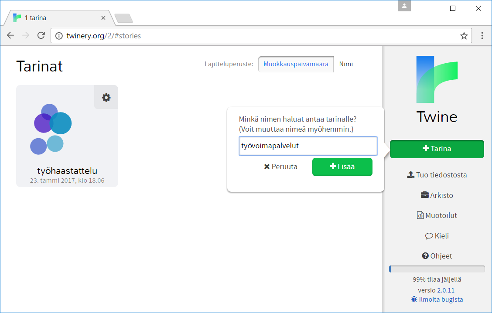
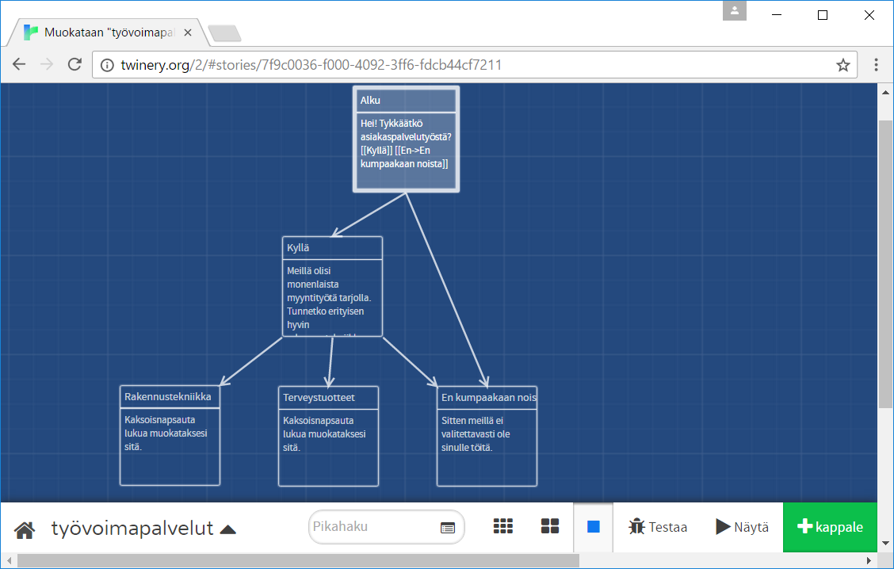
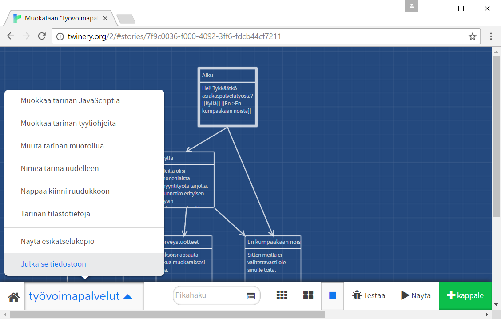

Twine-ohje
Twine löytyy osoitteesta twinery.org. Sivuston pääsivu näyttää tältä (laatikoiden asemointi voi vaihdella näytön tarkkuudesta riippuen):
{kind=link}
Sivusto on oletusarvoisesti englanninkielinen, mutta kieli voidaan kohta vaihtaa suomeksi. Keltaiselta lapulta oikeasta laidasta löytyy latauslinkki, jos ohjelman haluaa asentaa omalle tietokoneelle, mutta sitä voi käyttä suoraan selaimesta "Use it Online" -tekstiä napsauttamalla. Napsauta "Use it Online" -tekstiä.
{kind=link}
Ohjelma kertoo lyhyesti itsestään. Voit lukea englanninkielisen esittelyn tai hypätä suoraan pääsivulle "Skip"- eli ohita-painikkeella.

Pääsivu eli tarinaluettelo näyttää aiemmin tehdyt tarinat, minkä lisäksi oikealla puolella on valikko. Jos käytät Twineä ensimmäistä kertaa, sinulla ei näy vielä yhtään tarinaa. Minulla näkyy yksi tarina nimeltään "työhaastattelu".
Muutetaan aluksi Twine suomenkieliseksi. Napsauta oikealla puolella olevasta valikosta Language.
{kind=link}
Twine on saatavilla useilla kielillä. Napsauta Suomen lippua, niin ohjelma palaa takaisin tarinaluetteloon ja on nyt suomenkielinen. Huomaa, että valikoiden tekstit ovat muuttuneet suomenkielisiksi.
{kind=link}
Tehdään uusi tarina. Napsauta valikosta vihreää "+Tarina" -painiketta. Anna tarinalle nimi ja napsauta "+Lisää" -painiketta.
{kind=link}
Twine siirtyi tarinanäyttöön. Sivun alalaidassa on valikoita, joita käytetään myöhemmin. Sinisellä taustalla on neliö, jonka ylälaidassa lukee Nimetön kappale. Se edustaa yhtä tekstin osaa eli kappaletta. Kaksoisnapsauta neliötä, jolloin avautuu kappaleen muokkaus.
{kind=link}
Oletusarvoisesti kappaleen nimi on "Nimetön kappale". Kappaleen nimi ei näy käyttäjälle. Alla olevalle harmaalle tekstialueelle kirjoitetaan käyttäjälle näkyvä teksti.
{kind=link}
Koska tarina alkaa tästä kappaleesta, annetaan sille nimeksi Alku. Anna kappaleelle otsikko ja kirjoita sen lisäksi alla oleva teksti kappaleen tekstialueelle. Kaksoishakasulkujen sisällä oleva teksti on valinta, jonka käyttäjä voi tehdä. Se näytetään käyttäjälle napsautettavana linkkinä.
{kind=link}
Kappaletta ei tarvitse erikseen tallentaa, vaan sen voi sulkea ylänurkan x-painikkeella tai esc-näppäimellä. Twine palaa tarinanäyttöön, jonne se on luonut kaksi uutta kappaletta sekä nuolet Alku-laatikosta näihin laatikoihin.
{kind=link}
Voit raahata laatikot parempiin paikkoihin (paina vasen nappi pohjaan, kun hiiren kohdistin on laatikon päällä, ja siirrä hiirtä nappia pohjassa pitäen). Ruutua voi myös vierittää ruudun reunoilla näkyvillä vierityspalkeilla.
Huomaa että uusien laatikoiden otsikot ovat "Kyllä" ja "En" eli Alku-kappaleessa käyttäjälle annetut valintavaihtoehdot. Nuolet osoittavat, että käyttäjä voi siirtyä Alku-kappaleesta jompaan kumpaan näistä uusista laatikoista.
{kind=link}
Kaksoisnapsauta kappaletta, jonka otsikko on Kyllä. Nyt kappaleen otsikko on jo valmiina. Kirjoita alla oleva teksti tekstikenttään.
{kind=link}
Poistu kappaleesta x-painikkeella tai esc-näppäimellä. Huomaa että Twine on luonut meille kolme uutta kappaletta, koska käyttäjälle annettiin kolme mahdollista valintaa. Tarina haarautuu sen mukaan mitä käyttäjä valitsee.
{kind=link}
Tarinan ei aina tarvitse haarautua yhä uusiksi haaroiksi. Itse asiassa tällaisesta tarinasta tulee hyvin työläs kirjoittaa, sillä haarojen määrä voi kasvaa kovin suureksi. Jos käyttäjä ei osannut rakennustekniikkaa eikä tuntenut terveystuotteita, lopetetaan keskustelu tähän. Kaksoisnapsauta "En kumpaakaan noista" -kappaletta ja kirjoita siihen alla oleva teksti.
{kind=link}
Jos käyttäjä jo keskustelun alussa kertoi, ettei tykkää asiakaspalvelutyöstä, ohjataan keskustelu tähän samaan lopetuskappaleeseen. Muokkaa Alku-kappaletta ja muuta viimeinen rivi seuraavan kaltaiseksi. Tämä merkintä tarkoittaa, että käyttäjälle näytetään teksti "En", mutta tämän vaihtoehdon valintaa hyppää kappaleeseen "En kumpaakaan noista".
{kind=link}
Poistu kappaleen muokkaukesta ja tarinan pitäisi nyt näyttää tältä.
{kind=link}
Vanha "En"-kappale on nyt turha. Se voidaan poistaa. Vie hiiri kappaleen päälle, jolloin esiin tulee ponnahdusvalikko. Valitse tästä roskapöntön kuva.
{kind=link}
Twine varmistaa haluatko varmasti poistaa kappaleen. Vastaa "Poista".
{kind=link}
Nyt tarina näyttää taas siistiltä.
{kind=link}
Voisimme jatkaa tarinaa eteenpäin. Mitä tapahtuu jos käyttäjä valitsee rakennustekniikan tai terveystuotteet? Mutta kokeillaan miltä tarina näyttää tässä vaiheessa. Napsauta alalaidan valikosta "Näytä"-painiketta. Selaimen uuteen välilehteen avautuu tarina pelattavassa muodossa.
{kind=link}
Voit sammuttaa pelin sulkemalla välilehden tai siirtyä Twineen sulkematta peliä.
Napsauttamalla tarinan nimeä alalaidan valikosta saat esiin ponnahdusvalikon, josta voit tallentaa tarinasi Julkaise tiedostoon -valinnalla. Selain lataa koneellesi html-tiedoston, joka sisältää kirjoittamasi tarinan.
Palaa tarinaluetteloon napsauttamalla Mökki-kuvaketta aivan vasemmassa alanurkassa.
{kind=link}
Laatimasi tarina näkyy nyt tarinaluettelossa. Voit tallentaa tarinan myös tästä näkymästä valitsemalla tarinan asetukset ja Julkaise tiedostoon. Jos sinulla on tietokoneelle tallennettu tarina, voit tuoda sen Twineen oikean laidan valikon Tuo tiedostosta -valinnalla. Kaikki tarinaluettelossa näkyvät tarinat voi tallentaa kerralla Arkisto-painikkeella, joka lataa koneellesi tarinat sisältävän arkistotiedoston.
{kind=link}
Jos suljet selaimen ja käynnistät sen uudelleen, tarinat todennäköisesti säilyvät selaimessa. Kuitenkin jos selaimen välimuisti tyhjennetään, myös Twinellä laaditut tarinat katoavat. Siksi on tärkeää tallentaa tarinoista kopio omalle tietokoneelle esimerkiksi Arkisto-painikkeella.